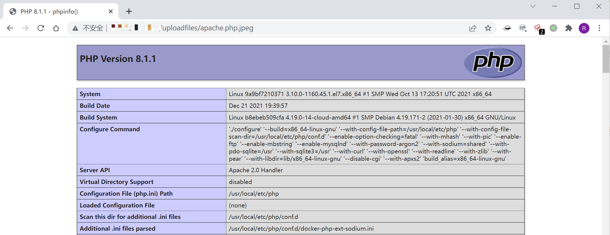

Apache HTTPd 多后缀解析漏洞¶
漏洞描述¶
Apache HTTPD 支持一个文件拥有多个后缀，并为不同后缀执行不同的指令。比如，如下配置文件：
AddType text/html .html
AddLanguage zh-CN .cn
其给.html后缀增加了media-type，值为text/html；给.cn后缀增加了语言，值为zh-CN。此时，如果用户请求文件index.cn.html，他将返回一个中文的html页面。
以上就是Apache多后缀的特性。如果运维人员给.php后缀增加了处理器：
AddHandler application/x-httpd-php .php
那么，在有多个后缀的情况下，只要一个文件含有.php后缀的文件即将被识别成PHP文件，没必要是最后一个后缀。利用这个特性，将会造成一个可以绕过上传白名单的解析漏洞。
环境搭建¶
Vulhub运行如下命令启动一个稳定版Apache，并附带PHP 7.3环境：
docker-compose up -d
漏洞复现¶
环境运行后，访问http://your-ip/uploadfiles/apache.php.jpeg即可发现，phpinfo被执行了，该文件被解析为php脚本。

http://your-ip/index.php中是一个白名单检查文件后缀的上传组件，上传完成后并未重命名。我们可以通过上传文件名为xxx.php.jpg或xxx.php.jpeg的文件，利用Apache解析漏洞进行getshell。